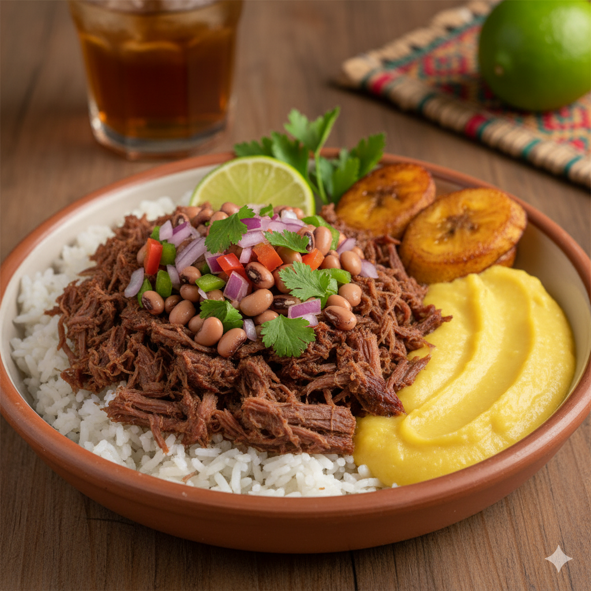
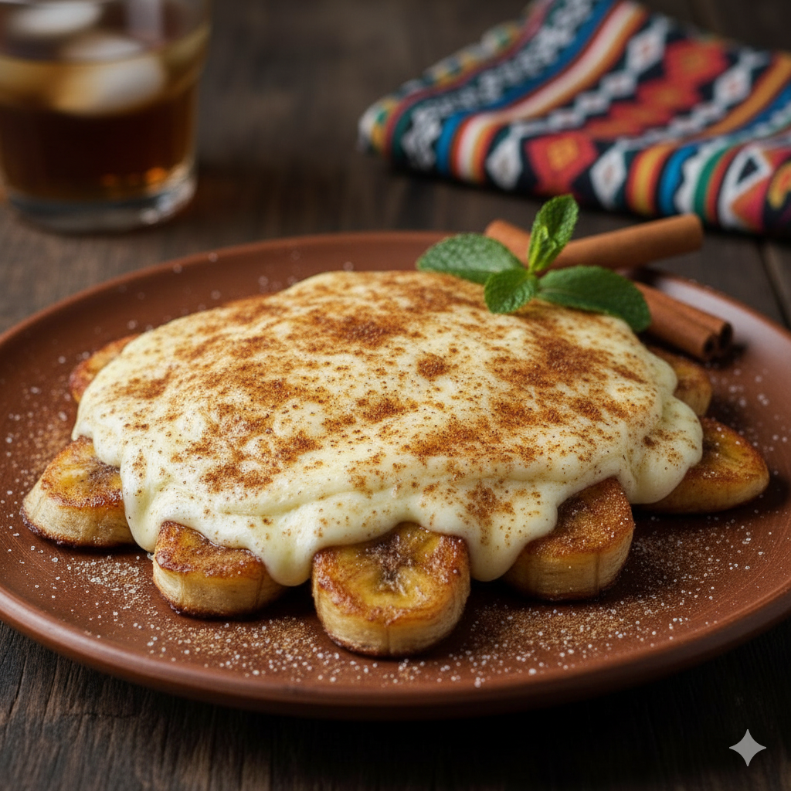

Cardápio Principal
Nossos pratos são preparados com ingredientes frescos e um toque de carinho sertanejo.
| Imagem | Prato | Descrição | Preço |
|---|---|---|---|

|
Carne de Sol na Nata | Deliciosa carne de sol desfiada, refogada na nata fresca com cebola roxa. | R$ 55,00 |
|  | Arrumadinho de Charque | Feijão verde, farofa, vinagrete e charque desfiada e acebolada. | R$ 48,00 |
| Baião de Dois | O clássico nordestino com arroz, feijão fradinho, queijo coalho e linguiça. | R$ 45,00 | |
| Moqueca Sertaneja | Uma versão da moqueca com peixe de rio, leite de coco e azeite de dendê. | R$ 60,00 | |
|  | Cartola | Banana frita na manteiga de garrafa, coberta com queijo coalho assado e polvilhada com açúcar e canela. | R$ 25,00 |
Sugestões do Chef:
- Cartola
- Arrumadinho de Charque
- Moqueca Sertaneja